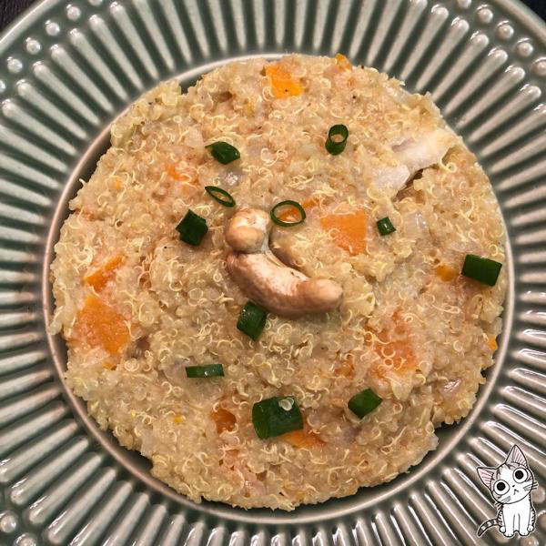
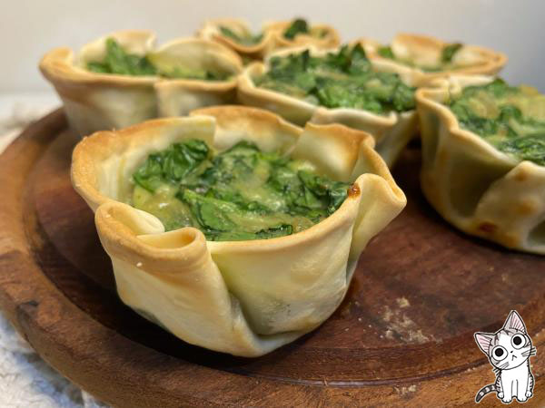
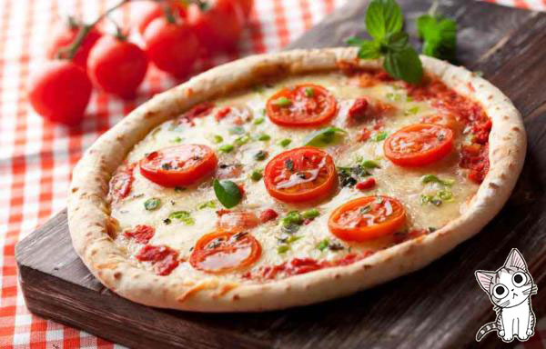

La quinua o quinoa es un grano que se cocina de manera parecida al arroz y, por eso, también puede usarse para preparar un plato similar al risotto, en este caso, conocido como quinotto. Esta vez en RecetasGratis vamos a preparar un risotto de quinoa y verduras pues sabroso con leche de coco, aunque si lo prefieres puedes utilizar leche normal o queso crema. Los platos de quinoa con verduras siempre saben bien, y si encima los combinas en una preparación tan cremosa como este risotto de quinoa vegetariano... ¡están atr!

"ver mas sobre la receta"
Canastitas de Verduras
Las canastitas rellenas son muy similares a las empanadas abiertas, a las tartas o a los quiches. Estas se pueden rellenar con los sabores que más te gusten. Su forma es muy original y tentadora para ayudar a incorporar vegetales en la dieta. Por ejemplo, puedes prepararlas para disfrutar de una vianda saludable en el trabajo o en la escuela.

"ver mas sobre la receta"
Pizza Napolitana
En esta receta te enseñaremos tanto a preparar la masa de pizza casera como a elaborar la tradicional pizza napolitana, con mozzarella y tomate. Sigue leyendo e intenta hacer esta maravilla.

"ver mas sobre la receta"
Sopa Crema de Calabaza y Manzana
Esta crema de calabaza y manzana que compartimos en RecetasGratis es rica y saludable, un plato ideal como entrante o para una cena ligera. El contraste de estos dos ingredientes es una verdadera delicia, tanto, que incluso los niños comerán este plato tan beneficioso para su desarrollo. Verás que el resultado es una crema suave, pero con mucho sabor.